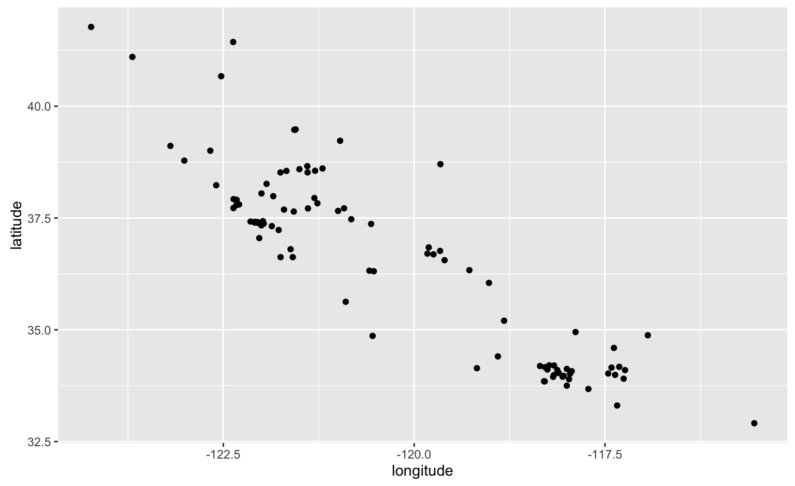
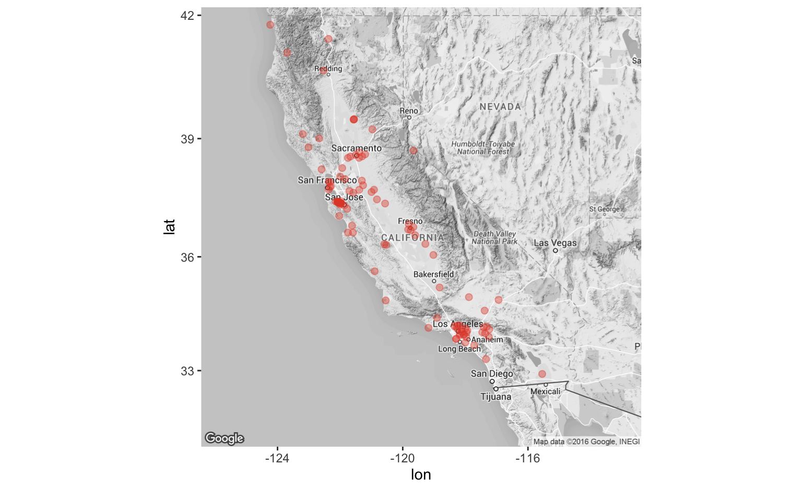

Jason A. Heppler
# install.packages("leaflet")
library(leaflet)
library(RColorBrewer)
library(ggplot2)
library(ggmap)
library(dplyr)
library(tidyr)Leaflet is a popular open-source JavaScript library for creating interactive maps, used by a range of sites including the New York Times, the Washington Post, GitHub, Flickr, OpenStreetMap, Mapbox, and CartoDB.
This package makes using Leaflet in R simple.
Leaflet features include:
Leaflet features include:
sp package, or data frames with latitude/longitude columns# Superfund sites CSV
calif_superfund_sites <- read.csv("./data/calif_superfund_sites.csv")
# We'll clean up the Superfund data a bit, selecting only
# the columns we want to keep.
calif_superfund_sites <- calif_superfund_sites %>%
select(NAME, CITY,STATE,ZIP,LONGITUDE,LATITUDE,STATUSDATE,HRS_SCORE)
# Let's filter out California sites.
calif_superfund_sites <- subset(calif_superfund_sites,
STATE %in% "CA")
# Convert the date into an R friendly version.
calif_superfund_sites$date <- as.Date(calif_superfund_sites$STATUSDATE, "%m/%d/%Y")
# Lowercase the variable names.
calif_superfund_sites <- setNames(calif_superfund_sites, tolower(names(calif_superfund_sites)))
# Extract the year to a new column
library(lubridate)
calif_superfund_sites$year <- year(calif_superfund_sites$date)Let’s recall our process for building maps in ggplot.
library(ggplot2)
library(ggmap)
map_basic <- ggplot() +
geom_point(data=calif_superfund_sites,
aes(x=longitude, y=latitude))
basemap <- get_map(location = "California",
zoom=6,
maptype = "terrain",
source="google",
color="bw")## Map from URL : http://maps.googleapis.com/maps/api/staticmap?center=California&zoom=6&size=640x640&scale=2&maptype=terrain&language=en-EN&sensor=false## Information from URL : http://maps.googleapis.com/maps/api/geocode/json?address=California&sensor=falsesuperfund_map <- ggmap(basemap) +
geom_point(data=calif_superfund_sites, aes(x=longitude, y=latitude),
size = 2, alpha = 0.4, color = "#e34a33")
Leaflet maps are easily initiated by invoking leaflet().
library(leaflet)
leaflet() %>% addTiles() %>%
addMarkers(lng = -123.3656, lat = 48.4284)Let’s try mapping the first thirty Superfund sites in the dataset.
superfund_leaflet <- leaflet() %>% addTiles() %>%
addCircleMarkers(data = calif_superfund_sites)## Assuming 'longitude' and 'latitude' are longitude and latitude, respectivelysuperfund_leafletleaflet() %>% addTiles() %>%
addCircleMarkers(data=calif_superfund_sites,
stroke = FALSE, fillOpacity = 0.5, radius=8,
popup=~paste("<strong>Site:</strong>", name,
"<br>",
"<strong>Date Added:</strong>", year))## Assuming 'longitude' and 'latitude' are longitude and latitude, respectivelyleaflet() %>% addTiles() %>%
addCircleMarkers(data=calif_superfund_sites,
stroke = FALSE, fillOpacity = 0.5, radius=~hrs_score/4,
popup=~paste("<strong>Site:</strong>", name,
"<br>",
"<strong>Date Added:</strong>", year))## Assuming 'longitude' and 'latitude' are longitude and latitude, respectivelypal <- colorNumeric(
palette = "Reds",
domain = calif_superfund_sites$year
)
leaflet() %>% addTiles() %>%
addCircleMarkers(data=calif_superfund_sites,
stroke = FALSE,
fillColor = ~pal(year),
fillOpacity = 0.5,
radius=~hrs_score/4,
popup=~paste("<strong>Site:</strong>", name,
"<br>",
"<strong>Date Added:</strong>", year))## Assuming 'longitude' and 'latitude' are longitude and latitude, respectively